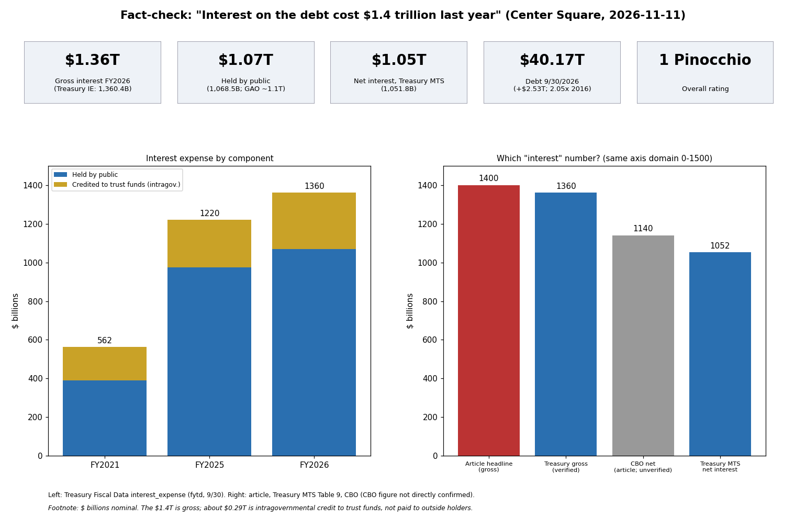

The headline figure checks out: gross interest on federal debt was $1,360 billion in FY2026 (Treasury), and GAO's audit (GAO-27-108795, released 2026-11-09) reports $1.4 trillion, about $1.1 trillion of it on debt held by the public. The piece itself says the remainder was credited to trust funds. Debt of $40.2 trillion, the $2.5 trillion one-year rise, the doubling in a decade, and the debt-limit and continuing-resolution background all verify.
| Claim | Finding | Verdict |
|---|---|---|
| Interest cost $1.4T in FY2026 per GAO audit | Treasury interest_expense FY2026: public issues 1,068.5B + government account series 291.9B = 1,360.4B. GAO-27-108795 reports $1.4T | True (gross) |
| ~$1.1T to bondholders, rest to trust funds | 1,068.5B public; 291.9B intragovernmental | True |
| GAO found schedules fairly presented, controls effective | Per GAO product page, as of 9/30/2026 | True |
| Debt $40.2T at Sept 30 | Debt to the Penny: $40,171.8B | True |
| Up about $2.5T in a year | 37,637.6B to 40,171.8B = +2,534.3B | True |
| About double a decade earlier ($19.6T) | 2016-09-30: $19,573.4B; ratio 2.05 (GAO: 105%) | True |
| Public-held interest ~$392B in FY2021 to ~$1.1T | GAO: ~$392B; Treasury FY2021 public issues: 389.0B | True |
| Rise due to debt and higher rates | GAO wording matches; CBO says the same | True |
| CBO net interest $1.14T, second to Social Security | Rank confirmed (AAF summary of CBO); dollar figure not seen. Treasury net is $1.05T (different measure) | Partly confirmed |
| CBO FY2026 deficit about $2T | CBO MBR: $2.0T, +$217B | True |
| CBO average deficits above $2.4T next decade | CRFB summary of CBO Feb 2026 baseline: $24.4T over 2027-2036, about $2.44T per year | True |
| CR (P.L. 119-103) funds government through Dec 11 | CRS R49353; signed 2026-09-02 | True |
| Limit $41.1T set July 2025 (OBBBA, +$5T) | $41.104T per NTU/GAO | True |
| Eight suspensions since 2013 (CRFB) | CRFB and CRS both say eight | True |
| Dickerson: limit reached Feb 2027, resources exhausted end-Nov 2027 | Conflicts with NTU Aug 2026 projection (May 2027; X-date Feb 2028) | Unverified, tension |
| Dickerson and Ditch quotes; Treasury did not respond | Interview material, no published source found | Not checkable here |
Treasury Fiscal Data API queries were run live (debt_to_penny, interest_expense, mts_table_5 and 9). interest_expense sums rows by category at record_date 9/30; the FY2025 sum (1,220.0B) matches GAO's $1.2T. The CBO source could not be read directly, and the article body was read through a summarizing fetch tool, not verbatim, so wording-level checks are limited.